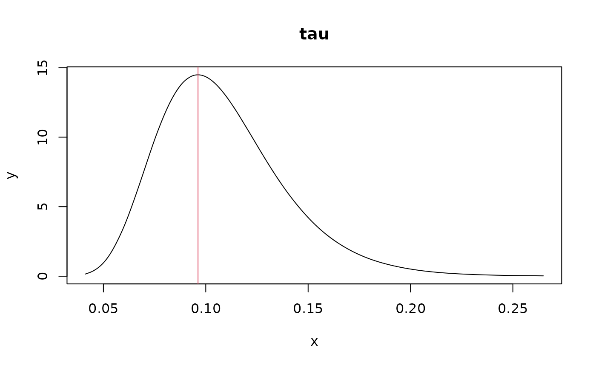
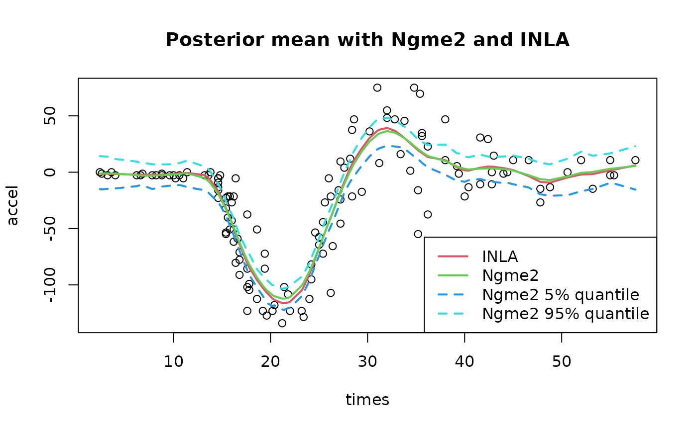
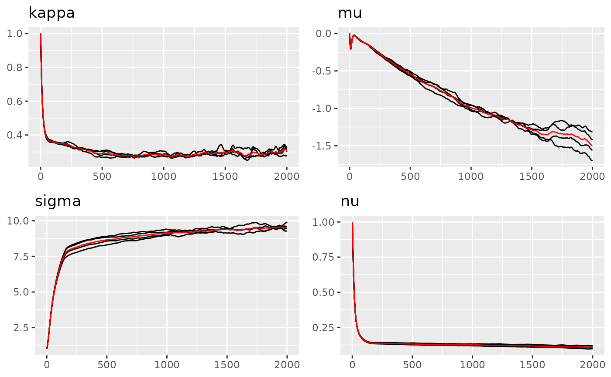
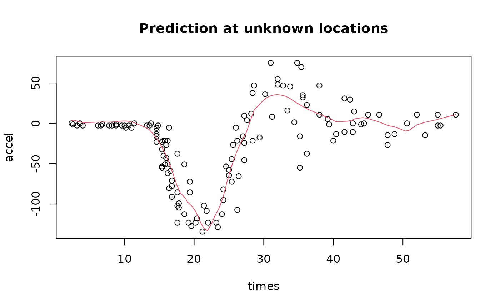

Description
R-INLA (https://www.r-inla.org) is a package in R that do approximate Bayesian inference for Latent Gaussian Models. Ngme2 follows similar structure but we allow non-Gaussian latent models (Latent non-Gaussian Models). In this vignette, we will introduce the basic usage of Ngme2 package and compare it with R-INLA.
Load data and create mesh
In this example, we will use the mcycle data, which is a data set of motorcycle acceleration times. The data set is available in the MASS package.
set.seed(16)
library(MASS)
library(INLA)
library(ngme2)
data(mcycle)
str(mcycle)
#> 'data.frame': 133 obs. of 2 variables:
#> $ times: num 2.4 2.6 3.2 3.6 4 6.2 6.6 6.8 7.8 8.2 ...
#> $ accel: num 0 -1.3 -2.7 0 -2.7 -2.7 -2.7 -1.3 -2.7 -2.7 ...
with(mcycle, {plot(times, accel)})Next we will create the mesh, in order to use the SPDE model. The
mesh is created by the function inla.mesh.1d. The first
argument is the location of the mesh points. The second argument is the
maximum edge length.
mesh <- inla.mesh.1d(mcycle$times, max.edge=c(1, 10))
mesh$n
#> [1] 94Compare results in INLA and Ngme2
Fit the model with INLA
# fit use INLA
spde <- inla.spde2.matern(mesh, alpha=2)
A <- inla.spde.make.A(mesh, loc=mcycle$times)
ind <- inla.spde.make.index("time", spde$n.spde)
data <- list(accel = mcycle$accel, time = ind$time)
# INLA
result_inla <- inla(
accel ~ -1 + f(time, model=spde),
data = data,
control.predictor = list(A = A),
control.compute = list(config=TRUE)
)Let’s check the estimation of SPDE model parameters
spde_res <- inla.spde.result(result_inla, "time", spde)
# posterior mode of kappa
post_mode_kappa <- with(spde_res$marginals.kappa,
kappa.1[which.max(kappa.1[, 2]), 1])
plot(spde_res$marginals.kappa$kappa.1,
type="l", main="kappa")
abline(v=post_mode_kappa, col=2)
post_mode_kappa
#> x
#> 0.2006511
# posterior mode of tau
post_mode_tau <- with(spde_res$marginals.tau,
tau.1[which.max(tau.1[, 2]), 1])
plot(spde_res$marginals.tau$tau.1, type="l", main="tau")
abline(v=post_mode_tau, col=2)
1 / post_mode_tau # for comparison with Ngme2 (same as sigma parameter in Ngme2)
#> x
#> 10.39322Fit 1d SPDE model with Ngme2
Next we do similar thing with Ngme2.
result_ngme <- ngme(
accel ~ -1 + f(times, model="matern", mesh=mesh, name="myspde"),
data = mcycle,
family = "normal",
control_opt = control_opt(
iterations = 1000
)
)
#> Starting estimation...
#>
#> Starting posterior sampling...
#> Posterior sampling done!
#> Note:
#> 1. Use ngme_post_samples(..) to access the posterior samples.
#> 2. Use ngme_result(..) to access different latent models.
result_ngme
#> *** Ngme object ***
#>
#> Fixed effects:
#> None
#>
#> Models:
#> $myspde
#> Model type: Matern
#> kappa = 0.228
#> Noise type: NORMAL
#> Noise parameters:
#> sigma = 9.77
#>
#> Measurement noise:
#> Noise type: NORMAL
#> Noise parameters:
#> sigma = 22.5
#>
#>
#> Number of replicates is 1Here, we can directly read the estimation of kappa and sigma (1/tau) as shown in the result.
Compare the results
with(mcycle, {plot(times, accel)})
lines(mesh$loc, result_inla$summary.random$time[, "mean"], col=2, lwd=2)
pred_W <- predict(result_ngme, map=list(myspde = mesh$loc))
# by dafult, predict() returns a bunch of statistics at the given location
str(pred_W)
#> List of 6
#> $ mean : num [1:94] -4.45 -4.28 -2.91 -2.26 -1.79 ...
#> $ sd : num [1:94] 9.06 9.1 9.14 8.63 8.61 ...
#> $ 5quantile : num [1:94] -18.3 -18.3 -17.8 -15.1 -12.6 ...
#> $ 95quantile: num [1:94] 11.2 11.9 11.9 10.9 10.2 ...
#> $ median : num [1:94] -6.25 -6.55 -3.17 -1.72 -2.88 ...
#> $ mode : num [1:94] -7 -7 -7 -5 9 -1 1 5 -3 -8.5 ...
lines(mesh$loc, pred_W[["mean"]], col=3, lwd=2)
title("Posterior mean with Ngme2 and INLA")
# One can add some quantile band to the plot using Ngme2
lines(mesh$loc, pred_W[["5quantile"]], col=4, lwd=2, lty=2)
lines(mesh$loc, pred_W[["95quantile"]], col=5, lwd=2, lty=2)
legend("bottomright", legend=c("INLA", "Ngme2", "Ngme2 5% quantile", "Ngme2 95% quantile"),
col=c(2, 3, 4, 5), lty=c(1, 1, 2, 2), lwd=c(2, 2, 2, 2))
Extend model to non-Gaussian case
The Ngme2 package allows us to fit non-Gaussian latent models. We can
easily extend the model to non-Gaussian case by changing the
noise argument, and we can start from previous result using
start argument.
# refit the model using nig noise
result_ngme2 <- ngme(
accel ~ -1 + f(times, model="matern", mesh=mesh, name="myspde", noise=noise_nig()),
data = mcycle,
family = "normal",
control_opt = control_opt(
seed = 3,
iterations = 2000
)
)
#> Starting estimation...
#>
#> Starting posterior sampling...
#> Posterior sampling done!
#> Note:
#> 1. Use ngme_post_samples(..) to access the posterior samples.
#> 2. Use ngme_result(..) to access different latent models.
result_ngme2
#> *** Ngme object ***
#>
#> Fixed effects:
#> None
#>
#> Models:
#> $myspde
#> Model type: Matern
#> kappa = 0.274
#> Noise type: NIG
#> Noise parameters:
#> mu = -1.35
#> sigma = 10.5
#> nu = 0.0835
#>
#> Measurement noise:
#> Noise type: NORMAL
#> Noise parameters:
#> sigma = 22.5
#>
#>
#> Number of replicates is 1
traceplot(result_ngme2, "myspde")
plot(result_ngme2$replicates[[1]]$models[["myspde"]]$noise)
Doing prediction with Ngme2
Doing prediction at unknown location in INLA would require much more effort, we will skip it (since it’s not the main focus). While in Ngme2, it can be done in just one line of code.
First we need to create a new mesh for prediction.
Next, we call the predict function with loc
argument provided with a list of new locations (for each latent
model).
# similar to the posterior mean in previous section
prd_ngme <- predict(result_ngme2, map = list(myspde=locs))[["mean"]]
with(mcycle, {plot(times, accel)})
lines(locs, prd_ngme, col=2)
title("Prediction at unknown locations")